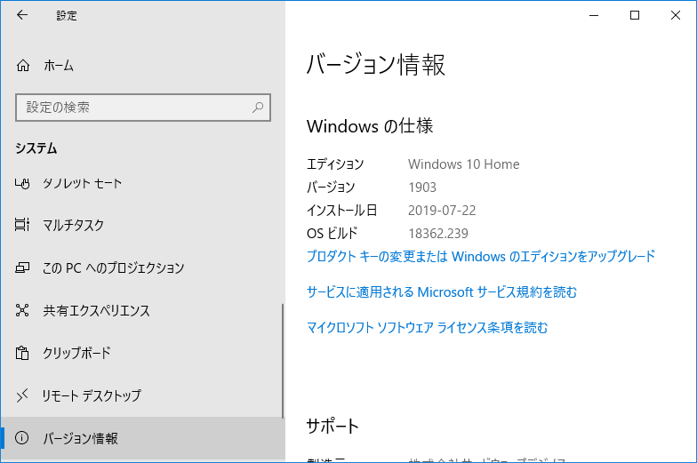
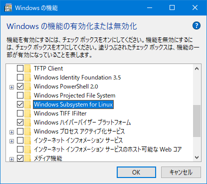
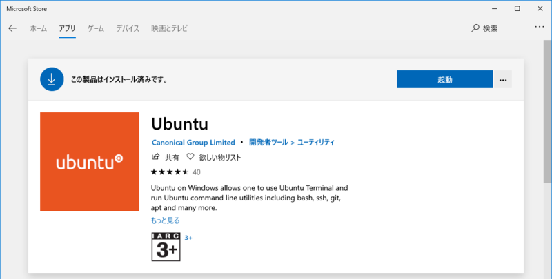
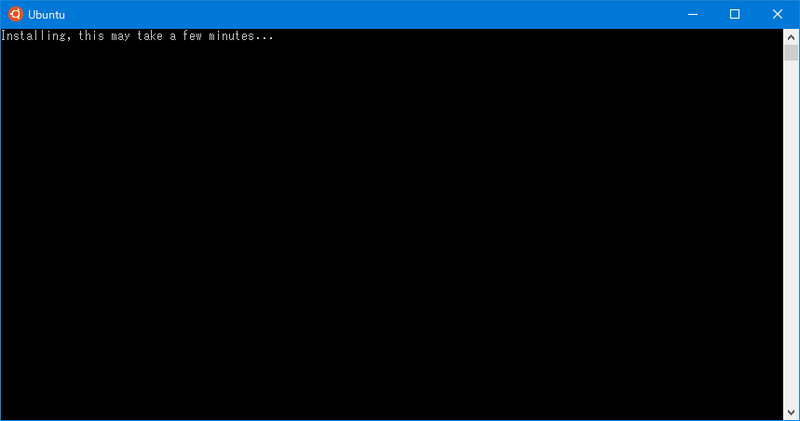
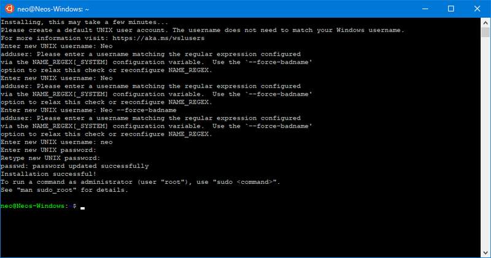
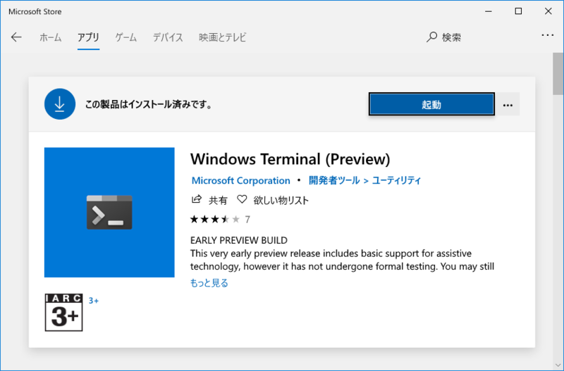
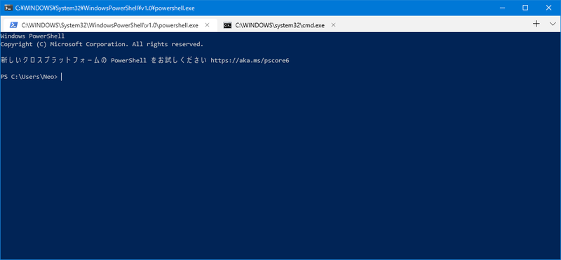
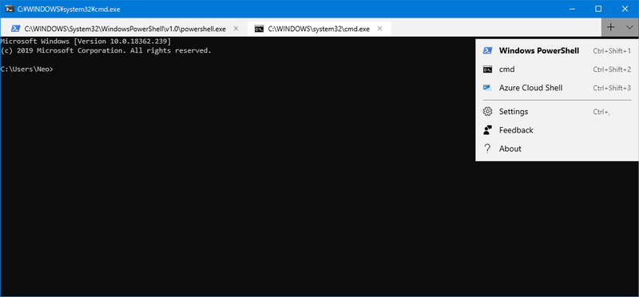

改めて Windows Subsystem For Linux (WSL) を使ってみる
2017年4月、当時は「Bash on Ubuntu on Windows」という名前だったが、Windows 上で Linux を動かす方法を検証した。
あれから2年、まずサービス名称が変わり、今では「Windows Subsystem For Linux (WSL)」と呼ばれている。当時は Insider Program に参加してプレビュー版をインストールしないと使えなかったが、現在は Microsoft Store から簡単に導入できるようになっている。
で、現在一般的に導入できるのは WSL 1 というバージョンで、本稿執筆時点では Windows 10 Pro の Insider Preview Build 18917 以降で WSL 2 が使える状態だ。
WSL2 にも興味はあるのだが、まだプレビュー版なので、今回は Insider Program などが必要なく導入できる、WSL1 の導入方法を改めて紹介する。
目次
WSL の導入方法
- Windows のバージョン確認。PC 設定 → システム → バージョン情報 → 「Windows の仕様」欄 → バージョン を確認。自分は Windows 10 Home の 1903 というバージョンで以降の作業を行った
- 
- コントロールパネル → プログラムと機能 → Windows の機能の有効化または無効化 → 「Windows Subsystem for Linux」と「Windows ハイパーバイザープラットフォーム」にチェックを入れて再起動する。最初からチェック状態だった人は WSL が使える状態が既に出来ている
- 
- Microsoft Store にて「Ubuntu」と検索。以下のように Ubuntu をインストールする
- 
- インストールが完了すると、スタートメニュー → アプリ → Ubuntu というメニューが追加されているので、コレを押下して起動する。初回は以下のように
Installing, this may take a few minutes...と表示されるので待つ- 
- 少し待つと、ユーザ名とパスワードを設定することになる。ユーザ名は大文字を入れられず小文字のみなので注意。入力が終わると初期設定が完了し、プロンプトが表示される
- 
以上。以降はインストールした「Ubuntu」ショートカットから WSL を起動すれば良い。
Ubuntu 環境のアップデート・日本語化
WSL が起動できたら、最初に以下のコマンドを叩いて Ubuntu 環境を最新版にアップデートしておこう。
# パッケージリストの更新
$ sudo apt update
# パッケージのアップデート
$ sudo apt upgrade -y
# 上のコマンドで保留されたパッケージのアップデート
$ sudo apt dist-upgrade -y
# 不要になったパッケージの削除
$ sudo apt autoremove -y
また、日本語化は以下の要領で可能。
$ sudo apt install -y language-pack-ja
$ sudo update-locale LANG=ja_JP.UTF8
WSL のバージョン確認方法
本稿執筆時点で一般的にインストールできるのは WSL1 系となる。
WSL2 系では、管理者権限で PowerShell を開き、以下のコマンドを実行することで、WSL のバージョン確認ができるようだ。
> wsl -l -v
# もしくは
> wsl --list --verbose
また、WSL2 をインストールしたあとは、WSL1 環境の Linux を WSL2 にアップデートする時、--set-version というオプションも使えたりする。
-v・--verbose や --set-version というオプションは、WSL1 系では用意されていないので、実行してみると コマンド ライン オプションが無効です: というエラーが出て、コマンドのヘルプが表示されると思う。このような表示になったら、まだ WSL2 がインストールできていなくて、WSL1 が使われているということ。
ついでに：Windows Terminal のプレビュー版がインストールできた
そういえば、Microsoft Store アプリを見ていて気付いたのだが、Windows Terminal というターミナルアプリのプレビュー版が一般でもインストールできるようになっていた。Windows 10 は最新版にアップデートする必要があるようだ。

起動してみるとこんな感じ。フォントにアンチエイリアスがちょっとかかってて見やすいかも。

Windows コマンドプロンプトも開けるし、Azure にも接続できるみたい。

参考
- Windowsで環境を極力汚さずにPythonを動かす方法 (WSL利用 Windows10, version 1607以降限定) - Qiita
- Install WSL 2 | Microsoft Docs
- Install Windows Subsystem for Linux (WSL) on Windows 10 | Microsoft Docs
- Windows 10 20H1で導入された「WSL 2」を使用する方法 | ソフトアンテナブログ
- WSL2を使ってみる (InsiderPreview) - Qiita
- Windowsユーザーに贈るLinux超入門(28) Visual Studio CodeとWSLでPython開発に挑戦してみよう | マイナビニュース